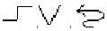
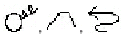
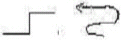
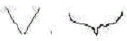
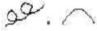
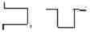
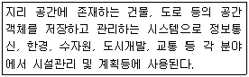
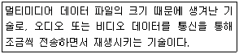
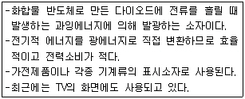

워드프로세서-2급(폐지) (2009-07-19 기출문제)
1과목: 워드프로세서 용어 및 기능
1. 다음 중 문서의 집중 관리 및 처리, 문서 용지의 이면지 사용 등과 관련이 있는 사무관리의 원칙은?
- 용이성
- 정확성
- 경제성
- 신속성
(정답률: 84%)

2. 다음 중 하나의 화면을 나누어 두 개 이상의 파일을 동시에 참조하면서 편집 할 수 있는 기능은?
- 윈도(Window) 기능
- 폴더(Folder) 기능
- 인쇄(Print) 기능
- 디자인(Design) 기능
(정답률: 79%)
3. 다음 중 캡션(Caption)의 설명으로 올바른 것은?
- 문서내 포함된 표나 그림에 붙이는 제목이나 설명을 의미한다
- 문서내 특정 단어와 관련된 내용을 연결시켜주는 기능이다.
- 밝기와 명암을 조절하는 그림 효과를 의미한다.
- 문서나 페이지의 하단에 쓰여진 제목이나 문서 분류를 나타내는 색인이다.
(정답률: 86%)
4. 다음중 문서 내에서 문단 모양, 글자 모양 등을 일관되게 작성하기 위해서 사용하는 기능은?
- 색인(Index)
- 스타일(Style)
- 포메터(Formatter)
- 상용구(Golssary)
(정답률: 88%)
5. 다음 중 문단정렬 기능에 대하여 설명한 것으로 옳지 않은 것은?
- 왼쪽정렬 : 본문의 왼쪽 끝을 기준으로 정렬된다.
- 오른쪽 정렬 : 본문의 오른쪽 끝을 기준으로 정렬된다.
- 양쪽 정렬 : 본문의 양쪽 끝을 기준으로 알맞게 배분된다.
- 가운데 정렬 : 본문의 가운데 단어를 기준으로 알맞게 배치된다.
(정답률: 81%)
6. 다음 중 한자 단어 변환에 대한 설명으로 옳지 않은 것은?
- 한글을 단어 단위로 한자 사전에서 찾아 변환한다.
- 모든 단어에 대해 변환이 가능한 것은 아니다.
- 자주 사용하는 단어가 한자 단어 사전에 등록되어 있는 경우 한자 변환에 효과적이다.
- 단어 단위로 변환하므로 음절 단위보다 변환 시간이 느리다.
(정답률: 75%)
7. 공고문서의 경우에 특별한 규정이 있는 경우를 제외하고는 그 고시 또는 공고가 있은 후 며칠이 경과한 날로부터 효력을 발생하는가?
- 1일
- 3일
- 5일
- 7일
(정답률: 87%)
8. 다음 중 입출력 장치가 올바르게 짝지어진 것은?
- 입력장치 - 잉크젯 프린터 , 출력장치 - 마우스
- 입력장치 - 마우스, 출력장치 - 스캐너
- 입력장치 - 키보드, 출력장치 - 플로터
- 입력장치 - 라인 프린터, 출력장치 - 디스크
(정답률: 79%)
9. 다음 중 워드프로세서에서 사용하는 문자에 대한 설명으로 옳은 것은?
- 첨자는 전각문자의 1/4배 문자이다.
- 문자의 크기는 포인트로 나타내며 1포인트는 72mm이다.
- 문자의 크기는 문자의 높이를 나타낸다.
- 전각문자란 장평이 200%인 문자이다.
(정답률: 68%)
10. 다음 중 매크로(Macro)에 대한 설명으로 가장 적합한 것은?
- 특정 문자열을 삭제하는 기능
- 특정 문자를 찾아 새로운 문자로 바꾸는 기능
- 특정 문자를 찾는 기능
- 반복되는 키보드의 동작을 특정키에 기억시켜 재생하는 기능
(정답률: 79%)
11. 다음 중 ‘♣’나 ‘⊙’와 같은 특수 문자에 대한 설명으로 옳지 않은 것은?
- 자판에 나타나 있지 않으므로 특수 문자표(혹은 코드표)를 이용하여 입력한다.
- 특수문자는 모두 1바이트로 구성되어 있다.
- 한글 윈도 운영체제에서 한글 자음을 입력한 후 [한자]키를 누르면 특수문자가 나타나므로 이를 이용하여 입력할 수 있다.
- 문서에 포함되어 있는 특수문자는 찾기 기능을 이용하여 찾을 수 있다.
(정답률: 72%)
12. 다음 중 ROM(Read Only Memory)에 대한 설명으로 틀린 것은?
- Mask ROM은 기록 내용을 읽어내기만 하는 기억 장치이다.
- 보조 기억 장치로서 자료 처리 속도가 빠르다.
- 기록된 내용은 전원이 끊어져도 지워지지 않는다.
- 반복해서 똑같은 내용을 읽을 수 있다.
(정답률: 62%)
13. 결재권자가 휴가, 출장 기타의 사유로 결재할 수 없는 때에 그 직무를 대리하는 자가 결재하는 것은?
- 정규결재
- 대결
- 전결
- 후결
(정답률: 85%)
14. 다음 중 문서를 작성하여 저장할 때 호환성이 가장 높은 형태로 저장하려면 어떤 확장자를 사용해야 하는가?
- HWP
- GUL
- RTF
(정답률: 55%)
15. 다음 중 한글코드에 관한 설명으로 옳지 않는 것은?
- 유니코드는 조합형, 완성형을 동시에 수용한 코드이다.
- 조합형코드는 한글의 초성, 중성, 종성을 조합하여 문자를 표현한 것이다.
- 완성형코드는 정보교환시 충돌이 발생하므로 정보처리용으로 사용된다.
- 조합형코드는 코드값을 조합한 것으로 현대 한글 11,172자를 표현할 수 있다.
(정답률: 67%)
16. 다음 중 인쇄장치에 대한 설명으로 옳지 않은 것은?
- 큰 용지에 설계도면 등을 인쇄할 때 플로터를 주로 사용 한다.
- 프린터의 해상도를 높게 설정하면 출력 속도를 높일 수 있으나 인쇄의 품질은 떨어진다.
- 잉크젯(Inkjet) 프린터는 잉크가 번지거나 노즐이 막히는 단점이 있다.
- 레이저(Laser) 프린터는 해상도가 높고 인쇄 속도가 빠르며 페이지 단위로 인쇄한다.
(정답률: 77%)
17. 다음 중에서 저장하기 대화상자가 나타나지 않은 경우는?
- 새 문서를 편집하고 저장하기(또는 저장) 기능을 선택하였다.
- 다른 이름으로 저장 기능을 선택하였다.
- 새 문서를 편집하고 다른 이름으로 저장 기능을 선택하였다.
- 불러오기로 읽어들인 문서를 편집한 후 저장하기(또는 저장) 기능을 선택하였다.
(정답률: 66%)
18. 다음 중 용어에 대한 설명으로 옳지 않은 것은?
- 스크롤(Scroll) : 문서 작성시 화면을 좌우상하로 이동하는 기능
- 미리보기(Preview) : 인쇄전에 인쇄될 내용을 화면상으로 확인하는 기능
- 위지윅(WYSIWYG) : 화면에 표현된 그대로 출력 결과를 얻을 수 있다는 것
- 해상도(Resolution) : 가로 문자수 X 세로 문자수로 표기 하며 화면의 선명도를 결정한다.
(정답률: 74%)
19. 다음 중 문서의 분량이 감소될 수 있는 교정 부호로만 묶여진 것은?


(정답률: 85%)
20. 다음 중 서로 상반되는 의미를 나타내는 교정부호끼리 짝지어진 것은?




(정답률: 86%)
2과목: PC 운영 체제
21. 다음 중 한글 Windows XP의 [제어판]에 있는 [프로그램 추가/제거] 프로그램을 이용하여 수행할 수 있는 작업으로 옳은 것은?
- Windows 구성 요소의 설치
- 시동 디스크 만들기
- 시스템 사용자 추가 및 제거
- [휴지통]에 있는 프로그램의 복원
(정답률: 58%)
22. 다음 중 한글 Windows XP에서 제공하는 [도움말 및 지원] 기능에 대한 설명으로 옳지 않는 것은?
- 시작 메뉴에서 [도움말 및 지원] 항목을 선택하여 실행 시킬 수 있다.
- 색인 기능을 이용하면 색인 목록을 스크롤하거나 키워드 단어를 입력하여 도움말을 찾을 수 있다.
- 필요없는 도움말은 삭제할 수 있다.
- 찾은 도움말을 인쇄할 수 있다.
(정답률: 80%)
23. 다음 중 한글 Windows XP의 [검색 결과] 대화상자에서 사용하는 [고급 옵션]에 관한 설명으로 옳지 않은 것은?
- 아이콘의 정렬 방법을 이용한 검색을 할 수 있다.
- 숨긴 파일 및 폴더를 검색할 수 있다.
- 대/소문자를 구분하여 검색할 수 있다.
- 테이프 백업 검색을 할 수 있다.
(정답률: 42%)
24. 다음 중 한글 Windows XP의 [탐색기] 창에서 할 수 있는 작업으로 옳지 않는 것은?
- 파일을 삭제할 수 있다.
- 바로 가기 아이콘을 만들 수 있다.
- 프로그램을 실행시킬 수 있다.
- 시스템을 재시동할 수 있다.
(정답률: 61%)
25. 다음 중 한글 Windows XP의 [마우스 등록 정보] 창에서 설정이 가능한 것으로 옳지 않은 것은?
- 숫자 키패드를 이용한 마우스 포인터를 움직이도록 변경
- 마우스 단추의 좌우 기능을 변경
- 마우스의 두 번 클릭 속도를 조정
- 마우스 포인터 모양의 변경
(정답률: 71%)
26. 다음 중 한글 Windows XP의 문서 편집기인 [메모장] 프로그램에서 사용할 수 있는 기능으로 옳지 않은 것은?
- 글자 색상 지정
- 머리글과 바닥글 작성
- 자동 줄 바꿈
- 출력 용지 및 여백 설정
(정답률: 73%)
27. 다음 중 한글 Windows XP에서 [디스크 정리]를 이용하여 삭제할 수 있는 파일로 옳지 않은 것은?
- 다운로드한 프로그램 파일
- 휴지통에 있는 파일
- 바이러스에 감염된 파일
- 임시 파일
(정답률: 60%)
28. 다음 중 한글 Windows XP에서 기본 프린터에 관한 설명으로 옳지 않은 것은?
- [프린터 및 팩스] 창에서 기본 프린터는 해당 프린터 아이콘에 체크 표시가 되어 있다.
- 다른 프린터를 기본 프린터로 설정하면 현재 기본 프린터는 해제된다.
- 기본 프린터로 설정하려면 [프린터 및 팩스] 폴더 창에서 해당 프린터 아이콘의 바로가기 메뉴에서 [기본 프린터로 설정]을 선택한다.
- 하나의 컴퓨터에서 여러대의 프린터를 연결하여 사용할 수 있으며, 기본 프린터는 하나 이상 지정이 가능하다.
(정답률: 73%)
29. 다음 중 한글 Windows XP에서 동시에 두개의 키를 누르기 힘든 경우에 [Shift], [Alt], [Ctrl] 키 또는 [Windows 로고] 키를 눌려 있는 상태로 고정할 수 있는 [내게 필요한 옵션]의 기능은?
- 토글키
- 고정키
- 필터키
- 단축키
(정답률: 73%)
30. 한글 Windows XP에서 현재 사용 중인 하드디스크 드라이브의 이름표와 사용공간, 여유공간, 파일 시스템 등을 확인하는 방법으로 옳은 것은?
- 해당 드라이브를 선택한 후 등록정보를 확인한다.
- 해당 드라이브를 더블클릭한다.
- [제어판]-[시스템]-[장치관리자]에서 확인한다.
- [탐색기]의 [도구] 메뉴에서 [폴더 옵션]을 선택한다.
(정답률: 50%)
31. 한글 Windows XP에서 시작 메뉴에 관한 설명으로 옳지 않은 것은?
- 사용자 계정이 표시된다.
- [모든 프로그램] 메뉴를 선택하면 설치된 프로그램의 목록이 계층적으로 표시된다.
- [로그오프]와 [컴퓨터 끄기] 아이콘이 있다.
- 시작 메뉴에 표시된 프로그램의 목록은 시스템을 부팅할 때 자동으로 실행된다.
(정답률: 62%)
32. 한글 Windows XP에 설치된 네트워크 어댑터의 [로컬 영역연결 속성] 창에서 확인하거나 설정할 수 있는 정보로 옳지 않은 것은?
- 연결에 사용할 장치
- 연결에 사용할 수 있는 네트워크 구성 요소 목록
- 연결되면 알림 영역에 아이콘 표시 유무
- 연결되어 있는 컴퓨터의 사용자 정보
(정답률: 51%)
33. 한글 Windows XP의 [휴지통] 창에 있는 삭제된 파일의 바로 가기 메뉴를 이용하여 할 수 있는 작업으로 옳지 않은 것은?
- 해당 파일을 원래의 위치에 복원하기 위하여 [복원]을 선택할 수 있다.
- 해당 파일을 원하는 장소로 복원하기 위하여 [잘라내기]를 선택할 수 있다.
- 해당 파일을 영구히 삭제하기 위하여 [삭제]를 선택할 수 있다.
- 해당 파일의 이름을 바꾸기 위하여 [이름 바꾸기]를 선택할 수 있다.
(정답률: 59%)
34. 다음 중 한글 Windows XP에서 특정 프로그램을 실행하는 방법으로 옳지 않은 것은?
- 프로그램이 설치되어 있는 폴더에 가서 실행 파일을 더블 클릭 한다.
- 바탕화면에서 바로가기 메뉴의 [실행] 항목을 선택하여 프로그램 이름을 입력한다.
- [시작] 메뉴에 등록되어 있는 해당 프로그램을 찾아 클릭한다.
- 바탕화면에 등록되어 있는 해당 프로그램의 바로가기 아이콘을 더블 클릭한다.
(정답률: 63%)
35. 다음 중 한글 Windows XP에서 전자 우편 서비스에 대한 내용으로 옳지 않은 것은?
- 전자 우편 클라이언트로는 아웃룩 익스프레스(Outlook Express)와 같은 것들이 있다.
- POP3 프로토콜을 이용하여 메일 클라이언트에서 메일 서버로부터 전자 우편을 받아올 수 있다.
- 전자 우편을 사용하기 위해서는 메일 서버에 계정이 있어야 한다.
- 기본적으로 설치된 Windows XP에 있는 메일 서버 기능을 이용하여 전자 우편을 관리할 수 있다.
(정답률: 44%)
36. 다음 중 한글 Windows XP가 제공하는 [Windows Media Player]에 관한 설명으로 옳지 않은 것은?
- CD, DVD 및 VCD를 재생할 수 있다.
- CD에서 트랙을 복사하고 사용자 오디오 및 데이터 CD를 만들 수 있다.
- 동영상 화면을 캡쳐하여 저장할 수 있다.
- 인터넷에서 라디오 방송국을 찾아 듣기가 가능하다.
(정답률: 54%)
37. 다음 중 한글 Windows XP의 [Windows 작업 관리자] 창에 대한 설명으로 옳지 않은 것은?
- 컴퓨터를 종료시킬 수 있다.
- 컴퓨터에서 실행 중인 프로세스에 대한 자세한 정보를 표시한다.
- 시스템의 성능 정보를 프린터를 통하여 출력할 수 있다.
- 실행 중인 프로그램을 강제로 종료 시킬 수 있다.
(정답률: 60%)
38. 다음 중 한글 Windows XP의 [폴더] 창에서 [보기]-[자세히] 메뉴를 선택할 때 표시되는 파일이나 폴더의 기본 항목으로 옳지 않은 것은?
- 파일의 특성
- 파일의 수정한 날짜
- 파일의 종류
- 파일의 크기
(정답률: 66%)
39. 한글 Windows XP의 [보조프로그램]에 있는 [그림판] 프로그램에서 [지우개]의 색상을 설정하는 방법으로 옳은 것은?
- 전경색의 색상을 색상 표에서 설정하면 된다.
- 배경색의 색상을 색상 표에서 설정하면 된다.
- 지우개의 색상은 무조건 검정색이다.
- 지우개의 색상은 무조건 하얀색이다.
(정답률: 63%)
40. 한글 Windows XP의 [시스템 도구]에 있는 [디스크 조각 모음]에 관한 설명으로 옳은 것은?
- 디스크의 오류를 검사하고 바이러스를 제거할 수 있다.
- 디스크 접근 수행 속도를 향상시킬 수 있다.
- 디스크의 단편화를 제거하여 디스크의 사용 가능 공간을 늘릴 수 있다.
- 시스템에서 사용하지 않은 프로그램을 제거할 수 있다.
(정답률: 49%)
3과목: PC 기본 상식
41. 멀티미디어는 다양한 매체로 구성되므로 멀티미디어 데이터를 처리하는데 기술적인 어려움들이 많이 존재한다. 다음중 기술적 어려움과 거리가 먼 것은 무엇인가?
- 실시간으로 처리할 자료의 용량이 크다.
- 멀티미디어 저장매체를 구하기 어렵다.
- 다양한 매체간의 동기화가 필요하다.
- 더욱 복잡해진 표준화를 요구한다.
(정답률: 56%)
42. 다음은 멀티미디어 데이터를 빠르게 처리하는데 도움이 되는 것들이다. 이 중에서 가장 관계가 적은 것은?
- 빠른 CPU
- 대용량 디스크
- 대용량 ROM
- 고성능 그래픽 카드
(정답률: 58%)
43. HDTV 수준의 화질을 제공하는 통신과 방송을 위한 MPEG 규격은 다음중 어느 것인가?
- MPEG-1
- MPEG-2
- MPEG-4
- MPEG-7
(정답률: 57%)
44. 다음 중 1m정도 내의 거리에 있는 전자기기 간에 케이블 없이 적외선으로 데이터를 전송하는 기술을 의미하는 용어는?
- IrDA
- 블루투스
- IEEE1394
- RFID
(정답률: 57%)
45. 다음 보기의 내용은 무엇을 설명한 것인가?

- GIS
- GRS
- GPS
- GKS
(정답률: 60%)
46. 다음 중 컴퓨터가 바이러스에 걸렸을 때 나타나는 증상으로 거리가 먼것은?
- 파일의 크기가 커져 기억장소의 크기가 감소한다.
- 이상한 에러 메시지가 나타난다.
- CMOS의 정보가 사라지거나 변경되어 나타난다.
- 컴퓨터가 갑자기 켜지거나 꺼진다.
(정답률: 72%)
47. 다음 중 정보보호기술과 가장 거리가 먼 것은?
- 바이러스 백신
- 가상 사설망
- 암호시스템
- 부가가치통신망
(정답률: 66%)
48. 다음은 무엇에 대한 설명인가?

- 레코딩 기술
- 디더링 기술
- 스트리밍 기술
- 변조 기술
(정답률: 73%)
49. 다음 중 보조기억장치에 대한 설명으로 옳은 것은?
- 현재 실행할 명령이나 데이터를 보관하는 역할을 한다.
- 저장된 정보를 실행시키면 주기억 장치를 거치지 않고 바로 실행된다.
- 저가이면서 저장용량이 커 백업용으로 사용하기에 적합하다.
- 주기억 장치에 비해 읽는 속도가 빠르며 고가이다.
(정답률: 49%)
50. PC에서 일반적으로 사용되는 운영체제는 다양한 기능을 갖고 있는 윈도 XP를 많이 사용하고 있다. 다음 중 콘솔(CON)에 관한 설명으로 옳은 것은?
- 프로그램의 일종으로 기본적인 입출력을 담당한다.
- 키보드와 프린터를 일컫는다.
- 표준 입출력장치를 말한다.
- 라이브러리 파일이다.
(정답률: 53%)
51. 다음 중 운영체제의 발전 단계를 순서대로 올바르게 나열한 것은?
- 일괄처리 시스템→ 시분할 시스템 → 분산처리 시스템 → 실시간처리 시스템
- 일괄처리 시스템 → 실시간처리 시스템 → 시분할 시스템 → 분산처리 시스템
- 분산처리 시스템 → 실시간처리 시스템 → 일괄처리 시스템 → 시분할 시스템
- 일괄처리 시스템 → 실시간처리 시스템 → 분산처리 시스템 → 시분할 시스템
(정답률: 60%)
52. 다음 중 컴퓨터를 데이터처리방식에 의해 분류하였을 경우 이에 속하지 않는 것은?
- 마이크로 컴퓨터
- 아날로그 컴퓨터
- 디지털 컴퓨터
- 하이브리드 컴퓨터
(정답률: 60%)
53. 다음 중 근거리 통신망(LAN)의 특징으로 가장 옳지 않은 것은?
- 자원의 공유를 목적으로 회사, 학교 등의 특정 구역내에서 통신망을 구성하는 것이다.
- 저가의 고속네트워킹이 가능하다.
- 전송속도는 높으나, 에러 발생률이 높아 신뢰성이 있는 정보 전송이 어렵다.
- 연결 방식으로는 링형, 스타형, 트리형 등이 있다.
(정답률: 68%)
54. 다음 중 개인용 컴퓨터(PC : Personal Computer)에 대한 설명으로 옳지 않은 것은?
- 가정이나 사무실에서서 PC통신, 개인업무 등을 수행하는데 사용된다.
- 손바닥 위에 올려놓고 사용할 수 있는 초소형 컴퓨터를 랩톱(Laptop)라고 한다.
- 처리 능력에 따라 8, 16, 32, 64비트 등으로 나누어 진다.
- 책상위에 올려놓고 사용하는 데스크톱(Desktop)과 휴대용인 노트북 컴퓨터 등으로 분류된다.
(정답률: 67%)
55. 다음 중 바이러스의 유입 경로로 가장 거리가 먼 것은?
- 불법복사
- 컴퓨터 통신과 인터넷
- 컴퓨터 공동 사용
- CD-ROM에 들어 있는 정품 소프트웨어의 사용
(정답률: 79%)
56. 피싱 등으로부터 발생될 수 있는 개인정보의 누설과 유출을 막고 프라이버시 침해에 대응하기 위한 방안으로 가장 옳지 않은 것은?
- 철저한 전자우편(e-Mail) 관리
- 신중한 쿠키 이용
- 철저한 휴지통 관리
- 철저한 장치 관리자 관리
(정답률: 45%)
57. 다음 중 현재 사용하고 있는 인터넷 프로토콜인 IPv4의 단점인 인터넷 주소 고갈을 해결하기 위하여 주소 길이를 128비트로 확장한 차세대 인터넷 프로토콜은 어느 것인가?
- IPv5
- IPv6
- IPv7
- IPv8
(정답률: 67%)
58. 개인용 컴퓨터는 입력, 출력, 기억, 제어, 연산의 기능을 갖고 있는 여러 장치로 구성되어 있다. 다음 중 연산장치의 구성요소로 적합하지 않은 것은?
- 상태 레지스터
- 명령 레지스터
- 누산기
- 가산기
(정답률: 59%)
59. 다음 보기의 내용은 무엇을 설명한 것인가?

- LCD
- PDP
- CRT
- LED
(정답률: 72%)
60. 다음 중 사용자 프로그램이나 시스템 프로그램 등을 개발 할 때 소프트웨어 상에 존재하는 오류를 검출하여 수정하는 작업을 의미하는 용어는 어느 것인가?
- 컴파일(Compile)
- 테스트(Test)
- 링크(Link)
- 디버깅(Debugging)
(정답률: 69%)
문서의 집중 관리 및 처리, 문서 용지의 이면지 사용 등은 모두 비용을 절감하고 경제적인 사무관리를 위한 원칙입니다. 이러한 원칙을 따르면 회사는 비용을 절감하고 효율적인 업무를 수행할 수 있습니다. 따라서 경제성이 가장 적절한 답입니다.